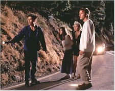

Contents | Features | Reviews | Books | Archives | Store |
 |
|
| Movie Credits | Buy It! |
I Know What You Did Last Summer
Review by Eddie Cockrell
Posted 17 October 1997
| Directed by Jim Gillespie Starring
Jennifer Love Hewitt, Sarah Michelle Gellar, Screenplay by Kevin Williamson, |
I Know What You Did Last Summer doesn't offer the genuinely groundbreaking genre twists of screenwriter Kevin Williamson's Scream, but to be fair it doesn't seem to want to, concentrating instead on many of the time-tested booga-booga cheap thrills of the genre and fashioning itself as a briskly-paced exercise in teenage morality that reflect it's a young adult novel origin. As such, it plays more like one of those cookie-cutter slasher pics of the 1980s, albeit one with a greater hipness quotient and a more competent (and buffed) cast.
In a picturesque North Carolina fishing village, four recent high school grads gather to celebrate Southport's Fourth of July Croaker Festival. Bookish Julie James (Jennifer Love Hewitt) and beauty queen Helen Shivers (Sarah Michelle Gellar) are joined by their sort-of boyfriends Ray Bronson (Freddie Prinze Jr.) and Barry Cox (Ryan Phillippe) on a secluded beach, where they trade conflicting ghost stories, agree that most of them exist to warn young women of the dangers of having premarital sex (shades of Halloween) – and end the evening the evening by having premarital sex. On the way home in Barry's Beemer (he's too drunk to drive, so Ray's at the wheel), they hit a mystery man on a sharp curve and after what passes for complex moral debate decide to dump his body off the end of a pier and never speak of the episode again ("right here and now," says the agitated Barry, "we take this to our graves.").
One year later, Julie gets a mysterious note with the title phrase. Estranged from the party of four – as they are from one another, the result of their impetuous act – she must reunite the young and defenseless band to find out just who the hook-wielding, raincoat-clad killer is before they're all gutted by the fiend (who, in the best slasher tradition, has impeccable timing, extraordinary luck and the ability to be in about three places at once).
Suspects and their motives include Max (Johnny Galecki), who pines for Julie; Missy Egan (Anne Heche), the gaunt, knife-wielding sister of a crucial off-screen character who roams a secluded, ramshackle farmhouse seemingly cloned from The Texas Chainsaw Massacre; Helen's sister Elsa (Bridgette Wilson), who is very skeptical of her sibling's plight; and wild-eyed waterman Benjamin Willis (Muse Watson), who may have more motives for vengeance than he owns up to.
As befits it's target audience, the film exists in a universe largely empty of adults (with one or two exceptions the few on display are seen and not heard), leaving the young people to make their own mistakes and grapple with the consequences of their actions. And in the peculiarly Draconian world of these kinds of movies, class and morals mean everything: Barry the excitable seems to be an exceedingly rich jock with a palpable mean streak, while Ray the meek and hunky (the son of the late comedian, in perhaps the film's most centered performance) has followed in his father's footsteps and bucks bushels of seafood on the docks. Julie is the brainy, take-charge one ("turbo chick," the star, who plays Bailey's girlfriend Sarah in "Party of Five" has said in interviews), while Helen is the petulant beauty queen who, in the film's most satisfyingly sequence, gets her spectacular come-uppance (for what: being petulant, or smoking?). Yet the movie is mischievous enough to play with these tenets: Julie qualifies for future slaughter by apparently doing it with Ray on the beach, and he subsequently becomes a suspect in the mayhem. Barry is attacked but survives, while the character of Helen plays nicely off Gellar's popular, undead-butt-kicking persona as "Buffy the Vampire Slayer" (she's one of the stars of the upcoming Scream 2). Both lead actresses acquit themselves nicely in the lung department, belting out the requisite screams in full-throated glory with volume and conviction (and boy, can Love Hewitt run).
Scottish-born music video vet Jim Gillespie directs with sincerity and conviction, creating with cinematographer Denis Crossan and production designer Gary Wissner a shadowy, complicated playground of gore in and around a bucolic seaside village (particularly memorable are an old-time department store and a slashing staged behind stacks of tires only a few feet from a passing parade).
John Debney's symphonic score gives the film an atmospheric aural gloss, while youth is served by the bookend covers "Summer Breeze" by Type O Negative (Seals and Crofts never sounded so threatening) and Kula Shaker's snappy take on Deep Purple's Joe South-penned "Hush." While the latter is getting most of the airplay for now, the soundtrack album (sadly, sans Debney) also features L7 covering Blue Oyster Cult's "This Ain't the Summer of Love," Toad the Wet Sprocket's weak take on the Beatles' "Hey Bulldog" from the Yellow Submarine soundtrack and original tunes by The Offspring, Green Apple Quick Step, Southern Culture on the Skids, Our Lady Peace, Korn and others (as is becoming the norm, few of them actually seem to have been used in the movie).
Is there a moral to all of this? Other than to beware of seaside psychos with good penmanship, the larger message seems to be that there will always be a fairly large market for this kind of movie, a slasher film that is smart enough to clue the audience in on the irony of it all (Shivers? Croaker? A killer that fastidiously cleans off his hook between guttings?), but not shrewd enough to come up with really new ways to offer the same old scares (although the car trunk full of crabs is a nice touch). But as long as new generations of teenagers fall for the same old thing, what's the point of updating anything except the clothes and music? More of a yell than a scream, I Know What You Did Last Summer is good intentioned yet derivative popcorn fodder for the indiscriminate thrillseeker.
Contents | Features | Reviews | Books | Archives | Store
Copyright © 1999 by Nitrate Productions, Inc. All Rights Reserved.